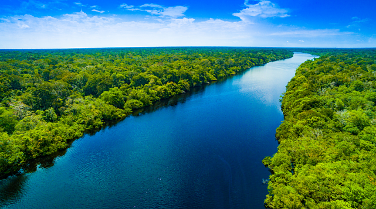

Brasil a fora
Contexto.
Essa viagem pelo Brasil é uma celebração da diversidade do país, explorando suas diferentes regiões, culturas e paisagens. A jornada oferece a chance de vivenciar praias, florestas, montanhas e cidades históricas, conectando-se com a rica cultura e natureza brasileira, e criando memórias únicas.
Seguir a Aventura?
Nordeste
Conhecida por suas praias deslumbrantes, cultura rica, e culinária saborosa, o Nordeste é um destino vibrante e colorido, com cidades históricas como Salvador e ilhas paradisíacas como Fernando de Noronha.
Seguir a Aventura?
Amazônia
O pulmão do mundo, a Amazônia é uma vasta e densa floresta tropical, lar de uma biodiversidade incomparável e paisagens deslumbrantes, com rios majestosos e uma rica cultura indígena.
Seguir a Aventura?
Sul
Uma região de climas temperados e paisagens europeias, o Sul do Brasil oferece serras encantadoras, vinícolas, e as impressionantes Cataratas do Iguaçu, combinando natureza exuberante com influências culturais diversificadas.
Seguir a Aventura?
Salvador
A capital da Bahia é o coração cultural do Brasil, com seu centro histórico, Pelourinho, repleto de casas coloridas, igrejas antigas, e uma vibrante cena musical e gastronômica.
Lençóis Maranhenses
Um dos cenários mais surreais do Brasil, o Parque Nacional dos Lençóis Maranhenses no Maranhão é conhecido por suas vastas dunas de areia branca intercaladas com lagoas cristalinas formadas pela chuva.
Manaus
Situada no coração da Amazônia, Manaus é o ponto de partida para explorar a floresta tropical e ver o famoso Encontro das Águas, onde os rios Negro e Solimões correm lado a lado sem se misturar.
Passeio de barco
Um passeio de barco pela Amazônia oferece uma imersão na floresta tropical, navegando por rios imensos e observando a rica fauna, como botos e aves exóticas. Você pode visitar comunidades ribeirinhas, vivenciar a cultura local e testemunhar o Encontro das Águas, onde rios de cores diferentes correm lado a lado sem se misturar. É uma experiência única de conexão profunda com a natureza.
Gramado e Canela
Estas cidades na Serra Gaúcha oferecem uma atmosfera europeia, com arquitetura em estilo alpino, festivais de inverno, chocolates artesanais e belas paisagens montanhosas.
Foz do Iguaçu
Localizada na fronteira entre Brasil, Argentina e Paraguai, Foz do Iguaçu abriga as espetaculares Cataratas do Iguaçu, uma das maiores e mais impressionantes quedas d'água do mundo, cercada por um parque nacional exuberante.
Fim da viagem..
você chegou ao fim